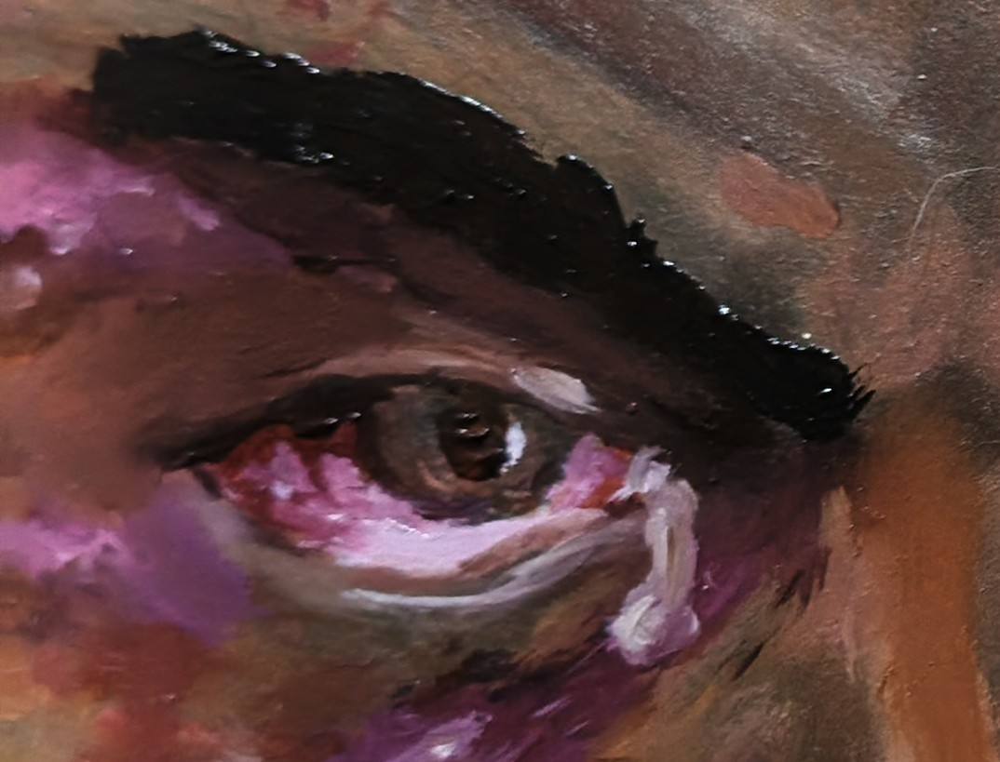

Proyectos / JA-03
Ira
Serie de pinturas
Una serie de pinturas conectada con la declaración artística. Las pinturas van primero; la interfaz se mantiene fuera de su camino.

01Obras
Las pinturas
02Declaración
Declaración artística
Texto por escribir.
Marcador Aún no se ha escrito la declaración de esta serie.
03Primeros planos
Detalles
04Proceso
Del boceto a la pintura
En desarrollo
05Futuro
Futuras exploraciones tecnológicas
La serie podría incorporar tecnología en el futuro. Todavía está en desarrollo y nada de esto existe aún.
¿Te interesa esta obra? Escríbeme, o encuentra el trabajo en otros espacios.